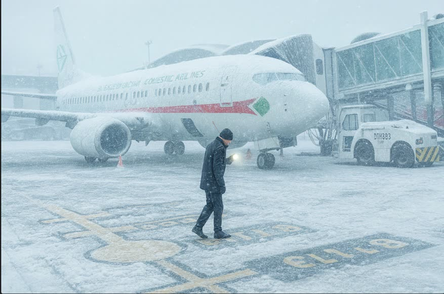

Lesson 01: Course Orientation and Objectives
Learning objectives
- Describe the purpose, scope and structure of this course.
- Explain how progress, narration, knowledge checks and the final quiz work.
- Recognise the relationship between this course and the aircraft and company manuals.

Purpose
This course gives Domestic Airlines crews a practical understanding of aircraft operations in cold weather. It covers aircraft contamination, ground de-icing and anti-icing, holdover times, contaminated runways, cold-soaked systems, cold temperature altimetry and the human factors that drive winter accidents.
Winter conditions rarely look dramatic. Most cold weather accidents began with something small: a thin layer of frost, a holdover time quietly expiring in the queue, a runway report that was already out of date. The aim of this course is to help you recognise those small things early and to act on them with confidence.
Who this course is for
- Flight crew — the primary audience. The pilot-in-command is responsible for making sure the aircraft is free of contamination before take-off.
- Cabin crew, flight dispatchers and ground operations staff — the course is also useful for everyone who supports a winter departure.
Course structure
| Module | Lessons | Focus |
|---|---|---|
| 1. Foundations | 1–5 | Weather, contaminants, icing and the Clean Aircraft Concept |
| 2. De-icing and Anti-icing | 6–11 | Methods, fluids, holdover times, preparation and communication |
| 3. Inspections | 12–13 | Clear ice, post-treatment checks and the pre-take-off checks |
| 4. Runways and Performance | 14–18 | Contaminated runway performance, GRF reporting, take-off, landing and taxi |
| 5. Aircraft Systems in the Cold | 19–23 | Cold soak, engines, systems, fuel, flight controls and in-flight icing |
| 6. Operations and Human Factors | 24–30 | Altimetry, dispatch, cabin, CRM, emergencies, regulation and accident lessons |
How to use this course
- Lessons take 5–10 minutes each. A lesson is marked complete when you reach its end or press Next.
- Narration — press Listen on any lesson to hear it read aloud.
- Knowledge checks at the end of each lesson are for practice only and are not scored.
- Final quiz — 20 questions drawn at random from a bank of 50. The pass mark is 80 %. You may retake it as many times as you need.
- Progress is saved in this browser on this device. Using another device or clearing browser data resets it.
This course is general training material based on international guidance (ICAO, EASA, FAA, Transport Canada and SAE). It does not replace the Aircraft Flight Manual (AFM), FCOM, QRH, MEL or the Domestic Airlines Operations Manual. Where they differ, the approved aircraft and company documents always take precedence.
Course objectives
By the end of the course you will be able to:
- identify frost, ice, snow and slush hazards and explain their effect on aircraft performance;
- apply the Clean Aircraft Concept and the company ground de-icing/anti-icing programme;
- select and use holdover time guidelines correctly, and know when a pre-take-off contamination check or re-treatment is required;
- interpret runway condition reports (RWYCC) and assess take-off and landing performance on contaminated runways;
- operate aircraft systems safely after cold soak and in icing conditions;
- apply cold temperature altimeter corrections;
- use CRM and threat and error management to resist time pressure in winter operations.
Key takeaways
- The pilot-in-command is responsible for making sure the aircraft is free of contamination before take-off.
- The AFM, FCOM and Operations Manual always take precedence over this course.
- Final quiz: 20 random questions, 80 % to pass, unlimited attempts.
Knowledge check
If this course and the Aircraft Flight Manual give different guidance, which do you follow?